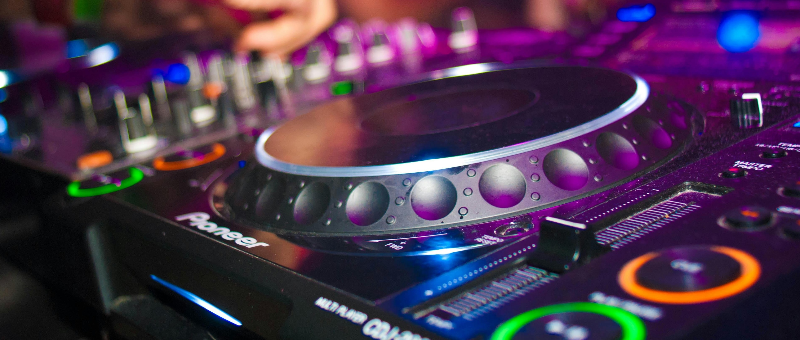

מוזיקה היא השפה האוניברסלית שמפגישה בין אנשים, וכדיג'יי, יש לי את הזכות ליצור חוויות בלתי נשכחות באמצעות כוח הסאונד. כל פעימה, כל מנגינה וכל קצב נבחר בקפידה כדי לתת חוויה בלתי נשכחת לקהל שלי
המסע שלי כדי ג'יי מונע על ידי אהבה עמוקה למוזיקה ורצון לראות חיוכים על הפנים, רגליים נעות בקצב, והרוח מרוממת. בין אם זה רצועת ריקודים מקפיצה או בלדה מלאת נשמה, המטרה שלי היא להפוך כל אירוע לחגיגה של חיים, שמחה וחיבור.
אני מאמין שלמוזיקה יש את הכוח להפוך כל רגע למשהו קסום. בואו ניצור את הרגעים הקסומים האלה ביחד. הצטרפו אליי למסע המוזיקלי הזה, ובואו ניצור זיכרונות שיימשכו לכל החיים.
Music is the universal language that brings people together, and as a DJ, I have the privilege of creating unforgettable experiences through the power of sound. Each beat, each melody, and each rhythm is carefully selected to resonate with the hearts of my audience.
My journey as a DJ is driven by a deep love for music and a desire to see smiles on faces, feet moving to the rhythm, and spirits lifted high. Whether it's a heart-pounding dance track or a soulful ballad, my goal is to make every event a celebration of life, joy, and connection.
I believe that music has the power to transform any moment into something magical. Let's create those magical moments together. Join me on this musical journey, and let's make memories that will last a lifetime.

Music is the universal language that brings people together, and as a DJ, I have the privilege of creating unforgettable experiences through the power of sound. Each beat, each melody, and each rhythm is carefully selected to resonate with the hearts of my audience.
My journey as a DJ is driven by a deep love for music and a desire to see smiles on faces, feet moving to the rhythm, and spirits lifted high. Whether it's a heart-pounding dance track or a soulful ballad, my goal is to make every event a celebration of life, joy, and connection.
I believe that music has the power to transform any moment into something magical. Let's create those magical moments together. Join me on this musical journey, and let's make memories that will last a lifetime.